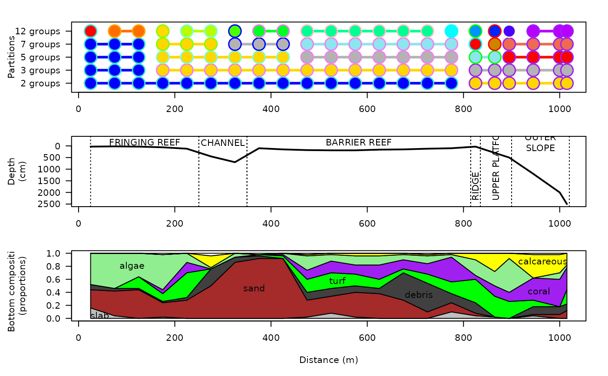

Fish community composition, ecological traits, and environmental characteristics observed along a 1-km coral reef transect.
data(Tiahura)
A list with four elements:
A data frame with 22 rows (sites) and 280 columns (fish species) describing the presence (value: 1) or absence (value: 0) of the fish species at the sites.
A character vector with 280 elements containing the binomial (latin) names of the 280 fish species.
A data frame with 280 rows (species) and five columns (traits) containing the species ecological traits (see details).
A data frame with 22 rows (sites) and 10 columns (characteristics) containing the environmental characteristics of the sites (see details).
A data frame with 6 rows (sections) and 3 columns describing the different sections of the transect (see details).
Pierre Legendre <pierre.legendre@umontreal.ca>, René Galzin <pol@univ-perp.fr>, Mireille Harmelin-Vivien <Harmelin@com.univ-mrs.fr>, and Guillaume Guenard <guillaume.guenard@gmail.com>
The Tiahura fish transect data was described and analyzed by Galzin & Legendre (1987). It consists of presence/absence data for 280 fish species observed at $22$ sites along a 1.02 km long coast-to-sea cross-reef transect located near the northwestern corner of the high volcanic island of Moorea (French Polynesia; WGS84: -17.4934, -149.8680). The survey sites were 50 m long. Species presence/absence data were recorded by a diver trained in underwater fish identification. The transect began on a coral sand beach, followed by a zone of detritic sediments, then a dying reef flat, followed by a zone of coral patches. That relatively flat area ended at a 100-m wide - 9-m deep channel, followed by a 490-m wide barrier reef, which ended in a slightly elevated reef ridge, followed by the outer slope into the Pacific Ocean. The survey was terminated at depth of approximately 25 m; this is the maximum depth allowing scuba diving for any length of time without having to perform decompression stops. For further details about the transect and survey method, see Galzin & Legendre (1987).
Ecological traits contained in data frame trait are
A seven-level categorical variables describing the feeding habits of the fish species
A seven-level categorical variable describing the general behavior of the fish species in their habitats
A six-level ordered variables describing the adult sizes of the fish species
A three-level categorical variable describing the types of eggs laid by the fish species
A three-level categorical variable describing the activity rhythm of the fish species
Environmental characteristics contained in data frame habitat are the
distance from the shore (in m), the water depth at the site (in cm), and
substrate composition. Substrate composition (environmental characteristics
3 - 10) is described by percentage coverage indices of the reef bottom by
different materials, based on 50 observation points. These observations
points were positioned at 1-m intervals along a 50-m rope. The variables
indicate what proportion of the 50 readings pertained to each category of
substrate. Several of these categories represent biological materials lying
on top of, intermingled with, or attached to the mineral substrate. When the
22 stations are considered globally, these eight substrate categories
respectively represent 2.5
0.7
Data frame reef, which contains the boundaries of the different
sections of the transect, comes in handy for displaying data graphically and
interpret results.
This data set was made available to the students in the European Advanced Course "Numerical Analysis in Marine Ecology" given at Observatoire océanologique, Université Paris VI, Villefranche-sur-Mer, on 3 - 20 July 1996.
Galzin, R. & P. Legendre. 1987. The fish communities of a coral reef transect. Pacific Science 41: 158-165.
Legendre, P., R. Galzin & M. Harmelin-Vivien. 1997. Relating behavior to habitat: Solutions to the fourth-corner problem. Ecology 78: 547-562
data(Tiahura) ## Compute dissimilary matrix from Jaccard's similarity coefficient: tiah.jac <- dist.ldc(Tiahura$fish,method = "jaccard")#> Info -- D is Euclidean because the function outputs D[jk] = sqrt(1-S[jk])## Constrained clustering of the fish species: tiah.chclust <- constr.hclust(tiah.jac, coords=Tiahura$habitat[,"distance"], chron=TRUE) ## Plotting the results par(mfrow=c(3,1)) ## First graph: constrained clusters par(mar=c(3,6.5,2,2)) dst <- Tiahura$habitat[,"distance"] plot(NA, xlim=range(dst), ylim=c(0.5,5.5), yaxt="n", ylab="Partitions\n\n", xlab="") parts <- c(2,3,5,7,12) cols <- c("turquoise", "orange", "chartreuse", "aquamarine", "blue", "violet", "pink", "cyan", "green", "red", "cornsilk", "purple") for(i in 1L:length(parts)) { tiah.chclust$coords[,"y"] <- i plot(tiah.chclust, parts[i], link=TRUE, lwd=3, hybrids="none", lwd.pt=0.5, cex=3, pch=21, plot=FALSE, col=cols[round(seq(1,length(cols), length.out=parts[i]))]) } axis(2, at=1:length(parts), labels=paste(parts,"groups"), las=1) ## Second graph: transect profile par(mar=c(4,6.5,1,2)) plot(x=dst, y=Tiahura$habitat[,"depth"], ylim=c(max(range(Tiahura$habitat[,"depth"])),-300), las=1, ylab="Depth\n(cm)\n", xlab="", type="l", lwd=2) for(i in 1:nrow(Tiahura$reef)) { abline(v=Tiahura$reef[i,2], lty=3) abline(v=Tiahura$reef[i,3], lty=3) if((Tiahura$reef[i,3] - Tiahura$reef[i,2])<100) { text(x=(Tiahura$reef[i,2] + Tiahura$reef[i,3])/2, y=2350, labels=toupper(Tiahura$reef[i,1]),srt=90,adj=0) } else { text(x=(Tiahura$reef[i,2] + Tiahura$reef[i,3])/2, y=-150, labels=toupper(Tiahura$reef[i,1])) } } ## Third graph: bottom composition par(mar=c(5,6.5,0,2)) plot(NA,xlim=range(dst), ylim=c(0,1), las=1, ylab="Bottom composition\n(proportions)\n", xlab="Distance (m)")bot <- cbind(0, Tiahura$habitat[,3:10]) for(i in 2:9) bot[,i] <- bot[,i] + bot[,i-1] cols <- c("", "grey75", "brown", "grey25", "green", "purple", "lightgreen", "yellow", "white") for(i in 2:9) polygon(x=c(dst, rev(dst)),y=c(bot[,i], rev(bot[,i-1]))/50, col=cols[i])text(x=c(44, 365, 707, 538, 957, 111, 965), y=c(0.05, 0.47, 0.37, 0.58, 0.42, 0.80, 0.88), labels=colnames(bot)[2:8], xpd=TRUE)## Species presence graph set: plot_slice <- function(sl,split) { size <- ceiling(length(Tiahura$species)/split) sp_slice <- size*(sl - 1L) + (1L:size) image(z=t(as.matrix(Tiahura$fish[,sp_slice])),y=1:nrow(Tiahura$fish), x=1:length(sp_slice),zlim=c(0,1),col=c("white","black"),axes=FALSE, ylab="",xlab="") axis(1L,at=1:length(sp_slice),labels=Tiahura$species[sp_slice],las=2L) axis(2L,at=1:nrow(Tiahura$fish),label=rownames(Tiahura$fish),las=1L) invisible(NULL) } ## par(mar=c(15,5,2,2)) plot_slice(1L,5L)#> Error in plot.new(): figure margins too large## plot_slice(2L,5L) ## plot_slice(3L,5L) ## plot_slice(4L,5L) ## plot_slice(5L,5L)